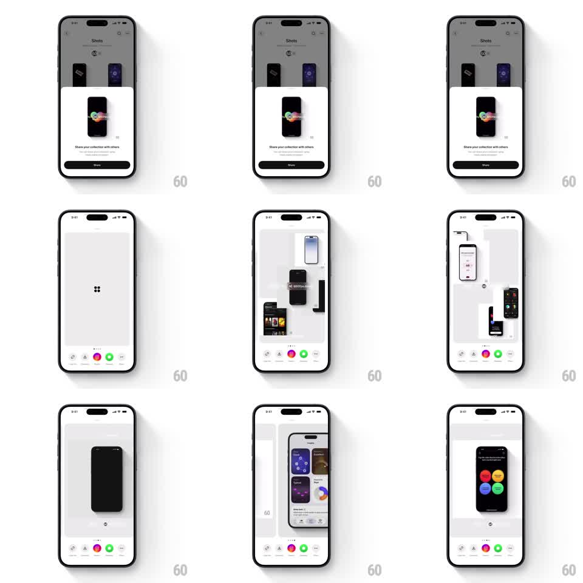

Media
Frame-by-frame

Rebuild this interaction 1:1: Cosmos's share-template carousel - swiping horizontally through share shot styles slides full-height previews with parallax depth, snapping crisply to each template above a fixed row of share targets.

Rebuild this interaction 1:1: Cosmos's share-template carousel - swiping horizontally through share shot styles slides full-height previews with parallax depth, snapping crisply to each template above a fixed row of share targets. ## Integration Integration: stack-agnostic spec - springs given as stiffness/damping, timed motions as duration + curve; map every value to your framework and animation library of choice. ## Scene Share sheet over the Shots library: a large preview stage showing the current share template (phone mock on grey, collage layouts, dark centered phone, colorful pill grid), page dots, and a bottom row of circular share-target icons (copy, Messages, Instagram, WhatsApp, more). ## Motion spec Pattern: snap carousel with layered parallax between templates. - Swipe drags the preview 1:1; the template's inner layers move at different rates (background 0.6x, phone mock 1x, caption 1.2x) for depth. - Release snaps to the nearest template (spring ~300/20, no bounce); neighbors peek ~40px from the edges. - During transit the outgoing template scales down to 0.94 and dims; the incoming scales up from 0.94. - Page dots slide with a stretch (active dot elongates toward the travel direction). - Share targets stay fixed at the bottom, unaffected by swipes. ## Calibration - The parallax is subtle - layers should separate, not scatter. - Snapping is instant-feeling: under 300ms to rest. ## Reduced motion Templates crossfade (200ms); dots change without stretch. ## Don't miss - Each template is a full design (mockups, captions, backgrounds), not a filter on one image. - The first open animates the sheet up and the first template scales in from 0.9 with a soft spring.